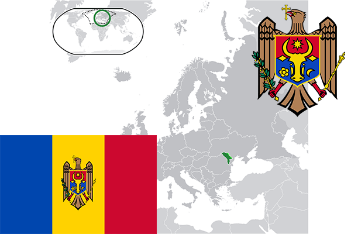

To`liq nomi: Moldova Respublikasi
Region: Janubiy- Sharqiy Yevropa
Qonunchilik shakli: Parlamentar Respublika
Mustaqillik kuni: 27-avgust 1991-yil
Poytaxt: Kishinyov
Maydoni: 33 846 км²
Chegaradosh davlatlari: Ukraina, Ruminiya
Aholisi: 3 550 900 (2017-yil)
Aholi zichligi: 119,8/km2
Aholining o`rtacha yoshi: 71,5
Rasmiy tili: Moldaviya tili
Dini: Pravoslav
Pul birligi: Moldova leyi.
Telefon prefiksi: +373
Internet domen: .md
Xalqaro tashkilotlarga a`zoligi: -
Dengiz va okeanlarga chiqishi: Qora dengiz
YIM: Butun: $ 6,5 mlrd. Jon boshiga: $ 1845
Yirik shaharlari: Kishinyov, Tiraspol, Bender